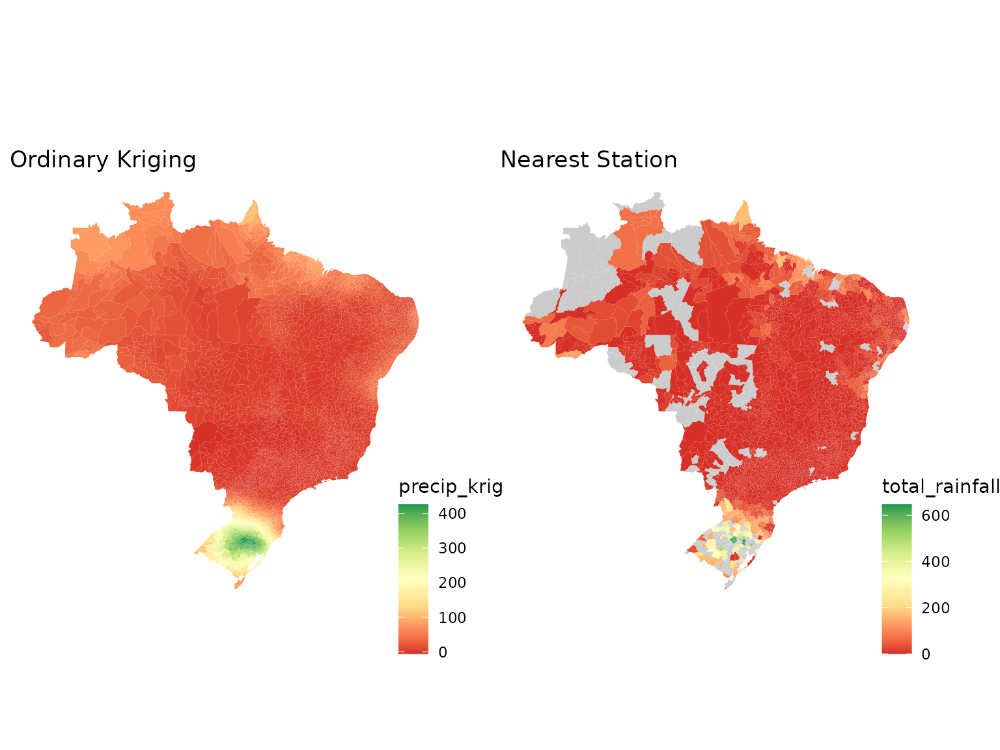
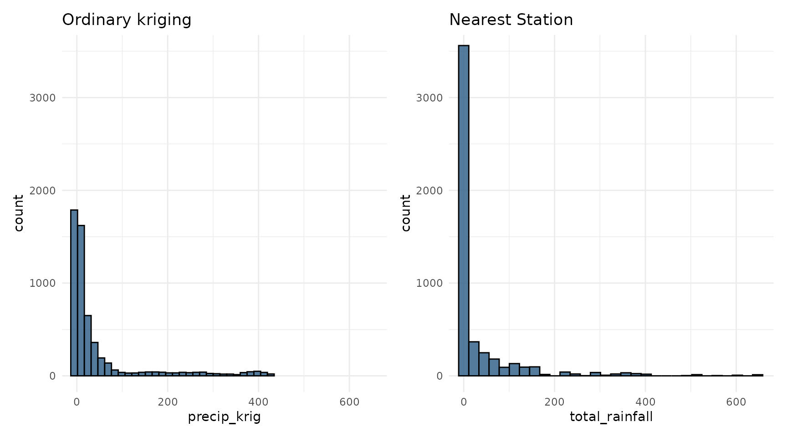

Introduction
Spatial interpolation is commonly used to estimate meteorological
variables at locations where no direct observations are available. The
kriging_inmet() function implements ordinary
kriging using weather station observations and spatial
prediction locations provided as sf objects.
This vignette demonstrates how to interpolate accumulated rainfall from INMET weather stations.
Input Data
The example uses rainfall observations from the 2024 Rio Grande do Sul flood event together with municipality geometries.
data("floods_rs")
data("mun_stations")
# Alternative for: geobr::read_municipality(year = 2024)
tmp <- tempfile(fileext = ".rda")
on.exit(unlink(tmp), add = TRUE)
download.file(
"https://github.com/kaiorb52/dados_municipais/raw/main/mun_24.rda",
destfile = tmp,
mode = "wb"
)
load(tmp)The station observations are converted to an sf object
and projected to a planar coordinate reference system suitable for
distance-based spatial analysis.
rain_sf <- floods_rs |>
st_as_sf(coords = c("lon", "lat"), crs = 4326) |>
st_transform(crs = 29193)
mun_centroid <- mun_24 |>
select(code_muni, geom) |>
mutate(
ponto = st_point_on_surface(geom)
) |>
st_drop_geometry()
mun_grid_sf <- mun_centroid |>
st_as_sf() |>
st_transform(crs = 29193)Running the Kriging Model
The kriging_inmet() function computes an empirical
variogram, fits a spherical variogram model, and performs ordinary
kriging predictions for the target locations.
krig_result <- kriging_inmet(
stations_df = rain_sf,
mun_geo = mun_grid_sf
)
#> [using ordinary kriging]The predicted values (var1.pred) and prediction
variances (var1.var) are then attached to the municipality
dataset.
mun_pred <- mun_centroid |>
select(code_muni) |>
bind_cols(
krig_result |>
st_drop_geometry() |>
select(
precip_krig = var1.pred,
precip_krig_var = var1.var
)
)Visualizing Kriging Predictions
The following map displays municipality-level rainfall estimates obtained through ordinary kriging.
p1 <- mun_24 |>
left_join(mun_pred, by = "code_muni") |>
ggplot() +
geom_sf(aes(fill = precip_krig), color = NA) +
labs(title = "Ordinary Kriging") +
scale_fill_distiller(
palette = "RdYlGn",
direction = 1,
na.value = "grey80"
) +
theme_void() +
theme(
legend.position = c(0.9, 0.1)
)Comparison with the Nearest-Station Approach
For comparison, the map below assigns each municipality the rainfall value from its closest weather station.
mun_floods <- floods_rs |>
left_join(
mun_stations |>
filter(station_order == 1),
by = c("code_wmo" = "code_wmo")
)
p2 <- mun_24 |>
left_join(
mun_floods |>
select(code_ibge7, total_rainfall),
by = c("code_muni" = "code_ibge7")
) |>
ggplot() +
geom_sf(aes(fill = total_rainfall), color = NA) +
labs(title = "Nearest Station") +
scale_fill_distiller(
palette = "RdYlGn",
direction = 1,
na.value = "grey80"
) +
theme_void() +
theme(
legend.position = c(0.9, 0.1)
)The figure below compares rainfall estimates generated using ordinary kriging against values obtained from the nearest-station approach.

Ordinary kriging generally produces smoother spatial surfaces and incorporates information from multiple nearby stations, whereas the nearest-station method assigns the same value to all municipalities linked to a given station and may introduce abrupt spatial discontinuities.
Each approach has important advantages and limitations. Ordinary kriging accounts for spatial dependence and usually generates more realistic spatial patterns than others methods. However, because it is a statistical interpolation technique, it may produce physically unrealistic estimates, such as negative rainfall values, and it often smooths the spatial field, reducing the magnitude of extreme precipitation events. As a result, very high observed rainfall totals may be underestimated in the interpolated surface. In contrast, the nearest-station approach preserves the original observed values, including extremes, but can create large areas with identical rainfall estimates because multiple municipalities may be assigned to the same station. This can lead to artificial boundaries and abrupt changes between neighboring municipalities that do not reflect the continuous nature of precipitation processes.
